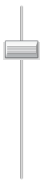

<?php 
$title="Yahoo! UI Library: Slider";
$section="slider";
$component="Slider Control";
$highlightSyntax = true;
$releasenotes = true;
include "../inc/header.inc";
?>

<div id="yui-main">
    <div class="yui-b">
        <div class="yui-ge">
            <div class="yui-u first">

                <div id="promo" class="component">
                    <h1><?php echo($title); ?></h1>
                    <p>The Slider component is a UI control that enables the user to adjust values in a finite range along one or two axes. Typically, the Slider control is used in a web application as a rich, visual replacement for an input box that takes a number as input. The Slider control can also easily accommodate a second dimension, providing x,y output for a selection point chosen from a rectangular region.</p>

                    <div>
                        <h4>On This Page:</h4>
                        <ul>
                            <li><a href="#start">Getting Started</a></li>
                            <li><a href="#using">Using Slider</a></li>
                            <li><a href="#knownissues">Known Issues</a></li>
                            <li><a href="#support">Support &amp; Community</a></li><li><a href="#filingbugs">Filing Bugs and Feature Requests</a></li>
                        </ul>
                    </div>

                    <?php include('../inc/quicklinks.inc'); ?>

                </div>

<!-- indent     |<== here moved back for readability -->
<h2 id="start" class="first">Getting Started</h2>
<p>To use the Slider control, include the following source files in your web page with the script tag:</p>

<textarea name="code" class="HTML" cols="60" rows="1">
<!-- Dependencies --> 
<script src="http://yui.yahooapis.com/<?php echo($yuiCurrentVersion);?>/build/yahoo-dom-event/yahoo-dom-event.js"></script>
<script src="http://yui.yahooapis.com/<?php echo($yuiCurrentVersion);?>/build/dragdrop/dragdrop-min.js"></script>

<!-- Slider skin (optional) --> 
<link rel="stylesheet" type="text/css" href="http://yui.yahooapis.com/<?php echo($yuiCurrentVersion);?>/build/slider/assets/skins/sam/slider.css">

<!-- Slider source file --> 
<script src="http://yui.yahooapis.com/<?php echo($yuiCurrentVersion);?>/build/slider/slider-min.js"></script>
</textarea>

<?php include "../inc/include-notice.inc"; ?>

<p>The Slider component is defined by YAHOO.widget.Slider.</p>

<h3>Basic HTML/CSS Setup</h3>
<p>To create a slider you will need ID references to two page elements: one for the slider background and one for the thumb.  The thumb should be a child of the background element.</p>
<textarea name="code" class="HTML" cols="60" rows="1">
<div id="sliderbg">
    <div id="sliderthumb"></div>
</div>
</textarea>

<p>The elements can be styled as desired, but both elements should be positioned (eg., either <code>relative</code> or <code>absolute</code>).  As the background area is clickable, the size of the elements matters. In typical implementations you will need to make the background width (for horizontal sliders) or height (for vertical sliders) equal the total number of pixels you want the slider to be able to move plus the width or height of the thumb element.</p>

<p>The following graphic illustrates the layout for a horizontal Slider (<strong>note:</strong> not to scale, and the dimensions are just an example, not a recommendation):</p>


<h3>Initializing the Slider </h3>
<p>The following example creates a horizontal slider object.</p>

<textarea name="code" class="JScript" cols="60" rows="1">
var slider;

function sliderInit() {
    slider = YAHOO.widget.Slider.getHorizSlider("sliderbg", "sliderthumb", 0, 200);
}
</textarea>

<p>The Slider instance in this example is configured so that it can be moved 200 pixels to the right, and 0 pixels to the left. It is also possible to configure the slider thumb to start in the center of the background, which would make sense if your default landing zone or zero value is in the middle of the range.</p>

<p>The <code>getHorizSlider</code> method produces a horizontal slider.  The <code>getVertSlider</code>  method produces a vertical slider.  The full constructor for both looks like this:</p>    

<p><code>YAHOO.widget.Slider.getHorizSlider(string bgid, string thumbid, int leftup, int rightdown, [int tick])</code></p>

<p>Where:</p>
<ul class="topspace">
    <li><em>bgid</em> is  the id of the slider background</li>
    <li><em>thumbid</em> is  the id of the slider thumb</li>
    <li><em>leftup</em> is the number of pixels the slider can move left or up (depending on orientation)</li>
    <li><em>rightdown</em> the number of pixels the slider can move right or down (depending on orientation)</li>
    <li><em>tick</em> is the optional tick interval (see <a href="#ticks">Setting
    up Tick Marks</a>   for more information)</li>
</ul>

<p>See the additional topics below in <a href="#using">Using Slider</a>, below, or on the <a href="#examples">Examples</a> page for functional examples.</p>

<h2 id="using">Using Slider</h2>

<p>This section describes customizations to the Slider.  It contains these sections:</p>
<ul class="topspace">
    <li><a href="#ticks">Setting Up Tick Marks</a></li>
    <li><a href="#animation">Creating Slider Animation</a></li>
    <li><a href="#events">Handling Slider Events</a></li>
    <li><a href="#region">The Region Slider </a></li>
    <li><a href="#dual">Dual Thumb Slider </a></li>
    <li><a href="#skin">Using the Sam skin</a></li>
</ul>

<h3 id="ticks">Setting Up Tick Marks</h3>
<p>Sometimes you may want your slider to move in fixed pixel increments instead of pixel by pixel.  Slider supports this with an optional fifth parameter to the <code>getHorizSlider</code> and <code>getVertSlider</code> methods for the tick interval. The following will produce a vertical slider with tick positions every 20 pixels:</p>

<textarea name="code" class="JScript" cols="60" rows="1">
var slider;

function sliderInit() {
    slider = YAHOO.widget.Slider.getVertSlider("sliderbg", "sliderthumb", 0, 200, 20);
}
</textarea>

<p>When the background is clicked, or the thumb dragged, the slider automatically snaps to the nearest tick position.</p>

<h3 id="animation">Creating Slider Animation</h3>
<p>If you include the YUI <a href="../animation/">Animation Utility</a> in your web page, the slider animates when its  background is clicked.  The animation is a smooth &quot;ease-in&quot; transition unless you define tick marks for the slider. In that case the slider snaps to all tick marks on its way to the final destination.</p>

<p>Animation may not be desirable in some implementations.  Some slider animations (for example, those using a CSS background image for the slider thumb) may cause performance issues for some browsers (notably IE). In the case of the  thumb performance can be improved by using a slider image (<code>&lt;img src=&quot;...&quot;&gt;</code>) rather than a CSS background on the slider HTML element.</p>

<p>If you prefer not to use animation, you can disable animation either by omitting the reference to the <a href='../animation/index.html'>Animation</a> class or by explicitly turning it off:</p>

<textarea name="code" class="JScript" cols="60" rows="1">
var slider;

function sliderInit() {
   slider = YAHOO.widget.Slider.getHorizSlider("sliderbg", "sliderthumb", 100, 100);
   slider.animate = false;
}
</textarea>

<h3 id="events">Handling Slider Events</h3>
<p>The Slider component fires these three events:</p>
<div class="apisummary">
    <table>
    <thead>
        <tr>
            <th>Event</th>
            <th>When</th>
            <th>Description</th>
        </tr>
    </thead>
    <tbody>
        <tr class="odd">
            <td><a href="../docs/YAHOO.widget.Slider.html#event_change"><code>change</code></a></td>
            <td>Continually when dragging the thumb <em>OR</em> once after a move caused by clicking the background</td>
            <td>Indicates change in the thumb's position</td>
        </tr>
        <tr>
            <td><a href="../docs/YAHOO.widget.Slider.html#event_slideStart"><code>slideStart</code></a></td>
            <td>Once at the beginning of a slide operation</td>
            <td>Indicates the moment the thumb begins moving</td>
        </tr>
        <tr class="odd">
            <td><a href="../docs/YAHOO.widget.Slider.html#event_slideEnd"><code>slideEnd</code></a></td>
            <td>Once after the thumb reaches its destination</td>
            <td>Indicates the completion of a thumb drag or thumb move in response to a background click</td>
        </tr>
    </tbody>
    </table>
</div>

<p>Additionally, <code>change</code> event subscribers are passed the number of pixels the thumb has moved from the position it was in when the component was initialized.  When a thumb is initially positioned in the center, for example, this value will be negative when the thumb is moved left or up (depending on orientation).</p>

<textarea name="code" class="JScript" cols="60" rows="1">
var slider = YAHOO.widget.Slider.getHorizSlider("sliderbg", "sliderthumb", 0, 200);
slider.subscribe('change', function (newOffset) {
    YAHOO.log("Thumb is now " + newOffset + " pixels from its starting position");

    myElement.innerHTML = newOffset;
});

slider.subscribe("slideStart", function() {
    YAHOO.log("Slider is a go!");

    YAHOO.util.Dom.setStyle(myElement,'background-color','#9f9');
});

slider.subscribe("slideEnd", function() {
    YAHOO.log("The thumb has arrived");

    YAHOO.util.Dom.setStyle(myElement,'background-color','#9f9');
    
    // Move the thumb to an increment of 10 pixels
    // (see using ticks for a better option)
    var val = slider.getValue(),
        roundedVal = val - (val % 10);

    // Note: DO NOT attempt slider.setValue(x) here.
    // You CAN call setValue in a setTimeout from here, though.
    if (val !== roundedVal) {
        setTimeout(function () { slider.setValue(roundedVal); },0);
    }
});
</textarea>

<h3 id="region">The Region Slider</h3>


<p>A two-dimensional Slider is referred to as a Region Slider.  Region Sliders report two values in the <code>change</code> event (x offset, y offset) and have their own method for setting value in JavaScript: <code>setRegionValue</code> takes x offset and y offset as arguments, followed by the boolean flag for skipping animation.  Design considerations regarding range and thumb width apply in both vertical and horizontal dimensions.</p>

<p>The following code sample illustrates the instantiation of a Region Slider whose thumb can move 0 pixels to the left, 300 to the right, 0 up, and 400 down.  The second line illustrates setting the thumb position by script to a position of 263 on the x-axis and 314 on the y-axis.</p>

<textarea name="code" class="JScript" cols="60" rows="1">
var slider = YAHOO.widget.Slider.getSliderRegion("sliderbg", "sliderthumb", 0, 300, 0, 400);

slider.setRegionValue(263, 314, true);
</textarea>

<h3 id="dual">The Dual Thumb Slider</h3>


<p>Another Slider variation is the DualSlider, a horizontal or vertical Slider with two movable thumbs.  At its core, the DualSlider is just two Sliders sharing the same background element.</p>

<p>The Slider instances that compose the DualSlider are stored in properties <code>minSlider</code> and <code>maxSlider</code>.  If you need to set specific Slider configurations, such as turning off animation, do the following:</p>

<textarea name="code" class="JScript" cols="60" rows="1">
var dual_slider = YAHOO.widget.Slider.getHorizDualSlider(
"sliderbg","minthumb","maxthumb",200);

// Turn off thumb animation for the DualSlider
dual_slider.minSlider.animate = false;
dual_slider.maxSlider.animate = false;
</textarea>

<p><code>change</code> event subscribers are passed the DualSlider instance as the first parameter.  The <code>minSlider</code> or </code>maxSlider</code> instance is passed as the parameter to <code>slideStart</code> and <code>slideEnd</code> subscribers (depending on which thumb is activated).</p>

<p>DualSliders maintain two <em>read only</em> properties, <code>minVal</code> and <code>maxVal</code>, for the current positions of the two thumbs.  To set the values in your code, use methods <code>setMinValue(n)</code>, <code>setMaxValue(n)</code>, or <code>setValues(n,n)</code>.</p>

<p>By default, DualSlider will let the thumbs bump up against one another, but not overlap.  Additional space can be maintained between the thumbs using the <code>minRange</code> property.</p>

<textarea name="code" class="JScript" cols="60" rows="1">
var dual_slider = YAHOO.widget.Slider.getHorizDualSlider(
                    "sliderbg","minthumb","maxthumb",200);

// Maintain a minimum of 10px distance between the inner edges of the thumbs
dual_slider.minRange = 10;
</textarea>

<p>Keep in mind that <code>minVal</code> and <code>maxVal</code> are calculated from the <strong>center</strong> of the thumbs.  Unless the <code>minRange</code> is overridden to allow the thumbs to overlap, <em>the minimum value difference will be the sum of the inner portion of the thumbs from their respective mid points</em>.</p>

<p>The min and max thumbs must both be initially <code>position: absolute</code> at the zero point on the background element.  DualSlider will place the max thumb at the end of the range during initialization.  You may request specific initial values in the sixth argument to the constructor.</p>

<textarea name="code" class="HTML" cols="60" rows="1">
<style type="text/css">
#sliderbg {
    position: relative;
    height: 20px;
    width: 220px;
    background: #fff url(yourbgimage.png) repeat-x 0 0;
}
#minthumb,
#maxthumb {
    position: absolute;
    height: 20px;
    width: 20px;
    left: 0; /* assumed, but for redundancy */
}
</style>

<div id="sliderbg">
    <div id="minthumb"></div>
    <div id="maxthumb"></div>
</div>

<script type="text/javascript">
(function () {

var range = 200,
    tickSize = 0,
    initVals = [ 60, 130 ], // Values assigned during instantiation
    dual_slider;

// During instantiation, the min thumb will be moved to offset 60
// and the max thumb to offset 130.
dual_slider = YAHOO.widget.Slider.getHorizDualSlider(
                "sliderbg","minthumb","maxthumb",
                range, tickSize, initVals);

})();
</script>
</textarea>

<h3 id="skin">Using the Sam skin</h3>
<p>As of version 2.6.0, Slider comes with a Sam skin treatment for Sliders and DualSliders (not region Sliders yet).</p>

<p>Because the range of a Slider is configurable and the size of the elements is implementation specific, there was no way to create CSS for all cases.  The Sam skin offering provides standard rendering for a 200 pixel wide horizontal Slider or 200 pixel tall vertical Slider.</p>

<textarea name="code" class="HTML" rows="1" cols="60">
<body class="yui-skin-sam">
...
<!-- horizontal slider -->
<div id="hsliderbg" class="yui-h-slider" tabindex="-1">
    <div id="hsliderthumb" class="yui-slider-thumb">
        
    </div>
</div>

<!-- vertical slider -->
<div id="vsliderbg" class="yui-v-slider" tabindex="-1">
    <div id="vsliderthumb" class="yui-slider-thumb">
        
    </div>
</div>
...
</body>
</textarea>

<p>Resulting in these renderings:</p>




<p>If you want a different background or thumb image, the following images are provided in the <code>build/slider/assets/</code> directory:</p>

<div class="apisummary">
    <table>
        <thead>
            <tr>
                <th>Image</th>
                <th>File</th>
                <th>Width</th>
                <th>Height</th>
            </tr>
        </thead>
        <tbody>
            <tr class="odd">
                <td></td>
                <td>thumb-n.gif</td>
                <td>17</td>
                <td>21</td>
            </tr>
            <tr>
                <td style="background-color: #fff"></td>
                <td>thumb-s.gif</td>
                <td>17</td>
                <td>21</td>
            </tr>
            <tr class="odd">
                <td></td>
                <td>thumb-e.gif</td>
                <td>21</td>
                <td>15</td>
            </tr>
            <tr>
                <td style="background-color: #fff"></td>
                <td>thumb-w.gif</td>
                <td>21</td>
                <td>15</td>
            </tr>
            <tr class="odd">
                <td></td>
                <td>left-thumb.png</td>
                <td>21</td>
                <td>20</td>
            </tr>
            <tr>
                <td style="background-color: #fff"></td>
                <td>right-thumb.png</td>
                <td>21</td>
                <td>20</td>
            </tr>
            <tr class="odd">
                <td></td>
                <td>thumb-bar.gif</td>
                <td>48</td>
                <td>26</td>
            </tr>
            <tr>
                <td style="background-color: #fff"></td>
                <td>thumb-fader.gif</td>
                <td>58</td>
                <td>24</td>
            </tr>
            <tr class="odd">
                <td></td>
                <td>bg-fader.gif</td>
                <td>209</td>
                <td>28</td>
            </tr>
            <tr>
                <td style="background-color: #fff"></td>
                <td>bg-h.gif</td>
                <td>209</td>
                <td>28</td>
            </tr>
            <tr class="odd">
                <td></td>
                <td>bg-v-e.gif</td>
                <td>36</td>
                <td>194</td>
            </tr>
            <tr>
                <td style="background-color: #fff"></td>
                <td>bg-v.gif</td>
                <td>36</td>
                <td>224</td>
            </tr>
        </tbody>
    </table>
</div>

<h2 id="knownissues">Known Issues</h2>
<ul>
    <li>
        <h4>Sliders report <code>NaN</code> values when rendered in a hidden container</h4>
        <p>Slider uses DragDrop logic for the thumb placement presuming the elements are in the live DOM and not obscured within an element with <code>display: none</code>.  When rendered off the displayed DOM, the initial calculated reference points are stored as <code>NaN</code>, causing all future reference calculations to result in <code>NaN</code>.  If it is not possible to delay the rendering of the Slider until its container is on DOM and displayed, you can use the workarounds illustrated on <a href="http://yuiblog.com/sandbox/yui/v251/examples/slider/slider_hidden.html">this page</a>.</p>
    </li>
</ul>

<?php include "../inc/mobileSection.inc";?>

<?php include "../inc/support.inc"; ?>

<!-- Indent | recovery -->
            </div>

            <div class="yui-u">
                <div id="cheatsheet">
                    <h3>Slider Control Cheat Sheet:</h3>

                    <a href="http://yuiblog.com/assets/pdf/cheatsheets/slider.pdf"></a>

                    <p><a href="/yui/docs/assets/cheatsheets.zip">Download full set of cheat sheets.</a></p>
                </div>

                <div id="examples">
                    <?php include("../inc/examplesNav/".$section.".inc"); ?>
                </div>

                <?php 
                $thisURI="http://developer.yahoo.com/yui/slider/";
                require_once('../inc/badge.inc');
                ?>

                <h3 id="delicious">YUI Slider on del.icio.us:</h3>
                <div class="delicious">
                    <?php require('../inc/badge-html.inc'); ?>
                </div>

            </div>
        </div>

    </div>
</div>

<?php include "../inc/side.inc" ?>
<?php include "../inc/footer.inc" ?>

